The Birder


An Ovid-inspired novel set in an alternate Oxford where people transform instead of dying.
People transform instead of dying
Since witnessing her brother change into a blackbird at an early age, Merel has never felt quite at home in the world. She embarks on a journey through science, religion, art and philosophy in her effort to come to terms with her loss. When she discovers a copy of Ovid's Metamorphoses in her local library, she soon becomes convinced that her world was not meant to be this way, and that this book holds the secret for putting things back on track.
Illustrated with linocut prints of birds around the city of Oxford, The Birder creates a mysterious world that is filled with familiar sorrows and joys.
Cover and illustrations by Lydia Hall.
Around the city
Features locations including
- St Giles' Cafe
- Gloucester Green
- Martyrs' Memorial
- Cheney School
- Lady Margaret Hall
- C.S. Lewis Nature Reserve
- St Mary and St John Church
The linocuts
The linocut prints of birds around the city of Oxford, from the book. Slide along the shelf.
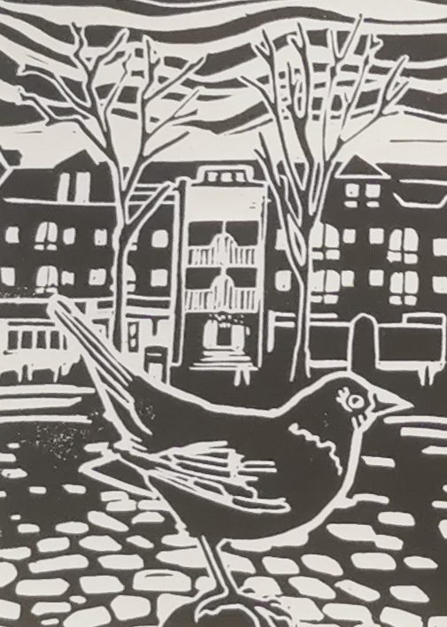
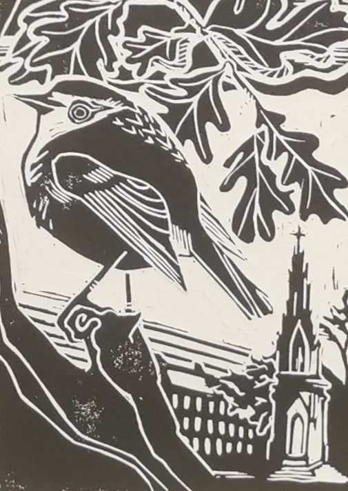
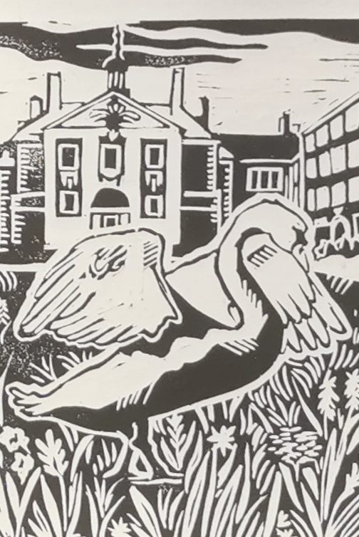
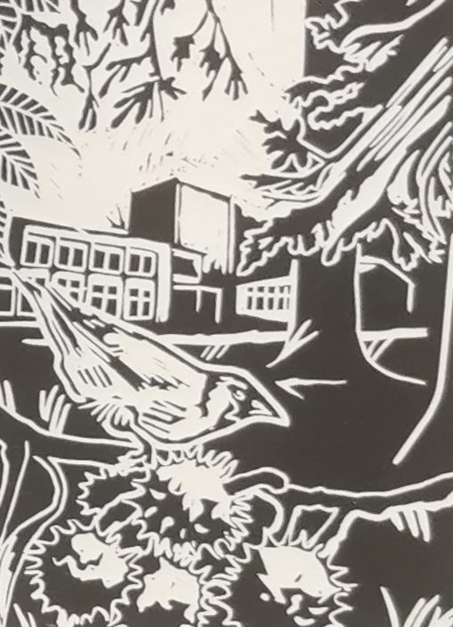
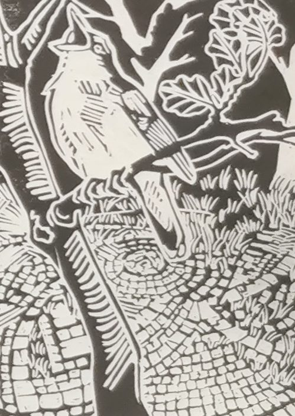
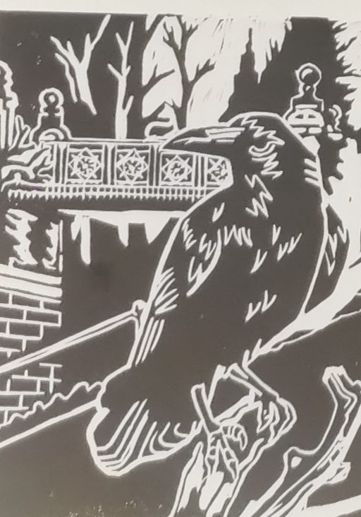
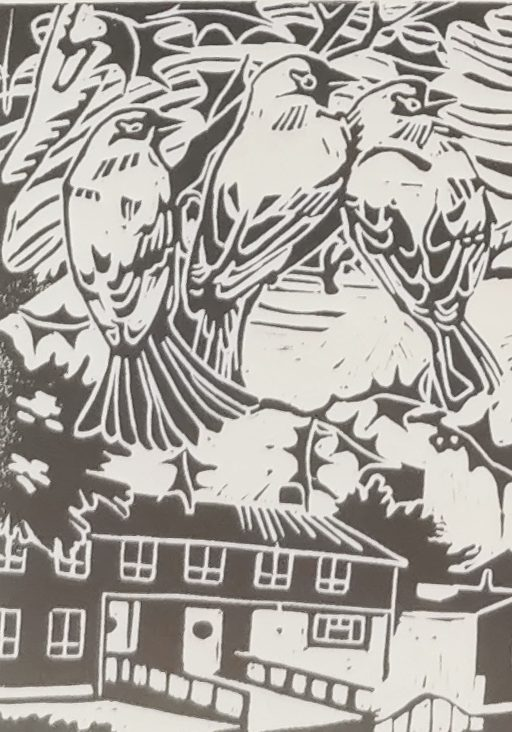
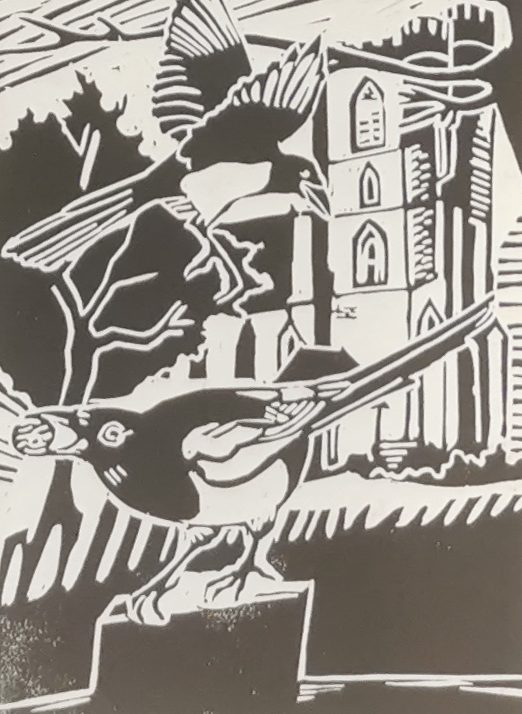
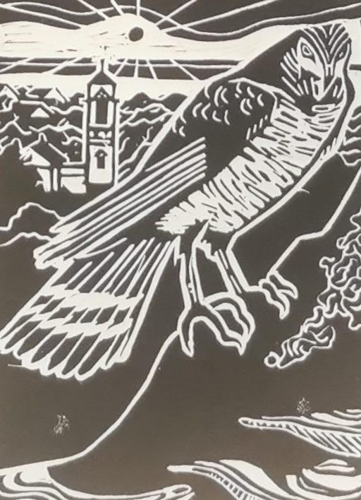
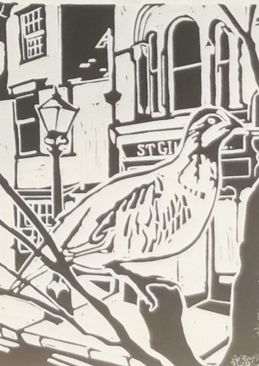
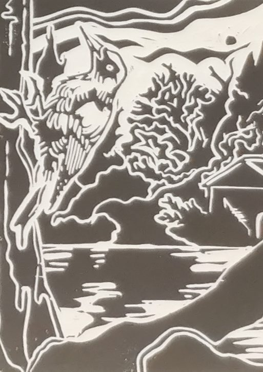
Reviews
“A delightful read… charming, witty and wise. There's no evil antagonist, no violence, just a bunch of people trying to make sense of the pain, mystery and beauty of the world.”
Chris Beckett, award-winning author
“An intriguing and moving novel about metamorphosis. Likely to appeal strongly to readers of the Northern Lights trilogy, a more intimate and realist narrative rooted in Greek mythology and Ovid's Metamorphoses.”
Dr Gary Snapper, University of Oxford